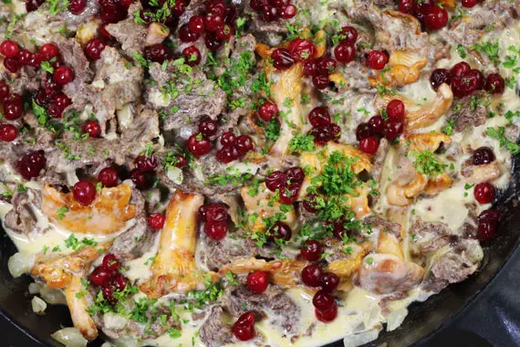

Reindeer with wild mushrooms

Description
Renskav is a traditional Sami dish in which thin slices of frozen reindeer meat are fried in a pan with wild mushrooms. Although it was developed by the Sami people living in the Arctic, it has been adapted for modern tastes and is now popular all over Sweden.
Ingredients
- 120 g lingonberries, fresh or frozen
- 3 Tbsp caster sugar
- 300 g wild mushrooms
- 480 g frozen reindeer
- 50 g butter
- 1 onion, finely chopped
- 2 Tbsp water
- 360 ml cream
- salt and white pepper, to taste
- 1 Tsp freshly chopped parsley, optional
Steps
- Prepare the rårörda lingon the night before by adding the lingonberries and sugar to a bowl or jar and stirring with a spoon. Keep at room temperature and stir from time to time until the sugar has dissolved.
- Remove the meat from the freezer, unwrap it and set aside for about 15 minutes, so that it thaws enough to separate the slices.
- Brush or wipe the mushrooms clean. If you need to wash them, drain them thoroughly and then pat them dry.
- Separate the slices of semi-frozen reindeer meat. (If they are still too frozen to separate the slices, add them to a frying pan on a low heat for a couple of minutes, then turn the meat over and heat the other side for a couple more minutes.) Once you have separated the slices, leave them to thaw a bit further whilst you fry the mushrooms.
- Melt about 2 tablespoons of butter in a large frying pan over a medium heat. Fry the mushrooms until all the liquid they release has been boiled off and they are beginning to colour nicely, then remove from the pan and set aside.
- Meanwhile, tear the reindeer slices into bit-sized pieces.
- Add another tablespoon or so of butter to the pan and fry the onions for 2 or 3 minutes until softened.
- Increase the heat and add the meat and cook until all the liquid has evaporated and the meat is just beginning to colour slightly, stirring from time to time, but take care not to overcook the meat.
- Add 2 tablespoons of water to the pan and stir to deglaze the pan. Return the mushrooms to the pan, add the cream and bring to the boil. Simmer gently for about 5 minutes until the meat is tender and the sauce has thicken slightly. (Meat that you have sliced by hand may need to be cooked for 10-20 minutes.)
- Season to taste with salt and white pepper, garnish with the rårörda lingon and chopped parsley, then serve immediately with mashed potatoes.